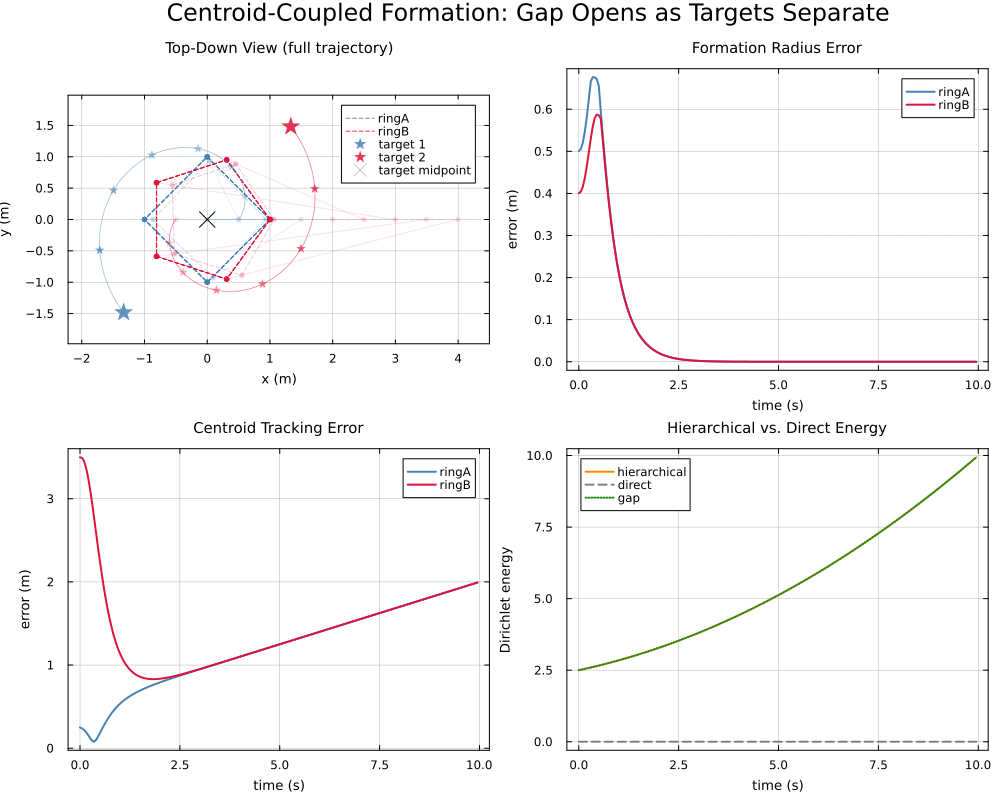
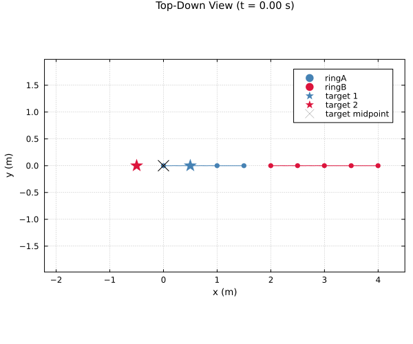

Centroid-Coupled Formation Tracking
This example demonstrates two NestedSystems features that have no equivalent in the flat Layered pipeline, and along the way makes a point about hierarchical control that is easy to miss: consensus enforced at a coarse level can silently override tracking at the fine level, even though every individual piece is behaving "correctly."
centroidrestriction maps (Issue 011) – a subsystem can present the unweighted average of its own members on an edge, not just one representative agent.approximation_gap(Issue 010) – the energy cost of forcing a hierarchy to stay rigid, measured against an unconstrained baseline.
Topology
Two rigid rings, ringA (4 agents) and ringB (5 agents – deliberately different sizes, so the two rings are visually distinguishable even when they land on top of each other, which is exactly what happens here), are grouped under a single subsystem mid. mid's internal edge uses centroid() on both ends: it ties ringA's own average position to ringB's own average position, not any single agent – and because mid is a single coarsest-level vertex, this isn't a soft preference, it's the defining constraint of mid's own space of admissible configurations. Both rings' centroids are forced to coincide, full stop.
Each ring still observes its own target – but through several agents at once (every other agent around the ring), not the usual single representative. Only the first of these uses plain project(1); the rest use NestedSystems.translation_pin, which pins only the translation components and deliberately leaves the homogeneous coordinate alone. That distinction matters: several full pins to the same target are mutually inconsistent for a rigid body by construction (that inconsistency, distributed as a least-squares compromise across the ring, is what rebalances a ring's "vote" against competing edges – see n_ring_formation.jl for where that actually matters). Left unmodified, that compromise doesn't stay confined to translation – it drags the homogeneous coordinate away from 1 too, which rescales the entire rigid body, since these affine restriction maps only represent pure translation correctly when it stays exactly 1. translation_pin avoids that entirely, and because it's deferred (no H_N representative, like centroid()), only the one true project(1) pin per ring is visible to the direct baseline below – so solve_direct reduces to exactly the same "two independent rigid rings, zero energy" case as the original single-pin design, uncomplicated by the redundancy.
The point
mid's constraint means the hierarchical solve cannot place ringA at target 1 and ringB at target 2 independently – it must find the one shared point that best satisfies both target pins at once, which lands exactly on the midpoint of the two targets (verified numerically), not on either target itself. As the targets spiral apart below, watch both rings sit together on that midpoint while their own targets move away in opposite directions – individually "rigid and correctly solved," yet visibly failing to escort either target. The gap panel quantifies exactly what this costs, and the tracking-error panel shows the failure directly, growing with separation instead of settling to zero the way a properly independent ring would.
using CellularSheaves
using CellularSheaves.ControlSheaves.NestedSystems
using CellularSheaves.ControlSheaves.AgentControllers
using LinearAlgebra
using Plots
using Printf
# `@__DIR__` resolves relative to Literate.jl's *output* location while a page is being
# executed, not this file's own source directory -- so the plotting helpers are located from the
# package root instead, which is stable regardless of how this script gets run. The simulation
# driver and multi-pin helpers themselves live in `NestedSystems` (already `using`-ed above).
include(joinpath(pkgdir(CellularSheaves), "docs", "literate", "nested", "_plot_helpers.jl"))Main.var"##1710".fade_alphaTopology specification
const D = 4 # SE(3) homogeneous: 3D translation + 1 homogeneous row
ringA = LeafTeam(:ringA, :ring, 4, 1.0)
ringB = LeafTeam(:ringB, :ring, 5, 1.0)
mid = RefinedSystem(:mid, AbstractSystemNode[ringA, ringB],
[SystemEdge(1, 2; src_map=centroid(), dst_map=centroid())])
root = RefinedSystem(:root, AbstractSystemNode[mid])
targets = [TargetSpec(:t1), TargetSpec(:t2)]
# Redundant pin: every other agent around each ring observes its own target, rather than the
# usual single representative -- see the topology note above. Only the first pin per ring uses
# plain `project`; the rest use `translation_pin`, which leaves the homogeneous coordinate alone
# (see its docstring in `_nested_simulation.jl` -- letting several full D×D pins fight over the
# same target drags the homogeneous row away from 1 and rescales the whole rigid body).
observations = vcat(
[Observation([1, 1], 1; system_map=redundant_pin(ringA.n_agents, D, k)) for k in 1:2:ringA.n_agents],
[Observation([1, 2], 2; system_map=redundant_pin(ringB.n_agents, D, k)) for k in 1:2:ringB.n_agents],
)
spec = NestedSystemSpec(root, targets, observations, D, true)
tower = build_sheaf_tower(spec)
# Agents are assigned depth-first: ringA's 4 agents, then ringB's 5.
ring_ranges = agent_index_ranges([ringA.n_agents, ringB.n_agents])2-element Vector{UnitRange{Int64}}:
1:4
5:9Target motion: two targets spiraling apart
Both targets orbit a common center at angular rate ω while their shared radius ρ(t) = ρ0 + k t grows – so their pairwise separation Δ(t) = 2ρ(t) increases smoothly over the run, sweeping the demonstration from a small gap up to a clearly-growing one within a single run. Velocity/acceleration below are the exact analytic derivatives (standard polar product rule), verified against finite differences before use – not finite-differenced at runtime.
const ρ0, k_sep, ω, h_alt = 0.5, 0.15, 0.4, 1.5
ρ(t) = ρ0 + k_sep * t
θ(t) = ω * t
target1(t) = [ρ(t) * cos(θ(t)), ρ(t) * sin(θ(t)), h_alt, 1.0]
target1_vel(t) = [k_sep * cos(θ(t)) - ρ(t) * ω * sin(θ(t)),
k_sep * sin(θ(t)) + ρ(t) * ω * cos(θ(t)), 0.0, 0.0]
target1_acc(t) = [-2k_sep * ω * sin(θ(t)) - ρ(t) * ω^2 * cos(θ(t)),
2k_sep * ω * cos(θ(t)) - ρ(t) * ω^2 * sin(θ(t)), 0.0, 0.0]
# target2 sits diametrically opposite target1 (angle θ+π): negate x, y and their derivatives.
target2(t) = [-target1(t)[1], -target1(t)[2], h_alt, 1.0]
target2_vel(t) = [-target1_vel(t)[1], -target1_vel(t)[2], 0.0, 0.0]
target2_acc(t) = [-target1_acc(t)[1], -target1_acc(t)[2], 0.0, 0.0]target2_acc (generic function with 1 method)Dynamics and gains
DT, STEPS = 0.05, 200
dyn = QuadrotorDynamics()
Ad, Bd = CellularSheaves.AgentControllers.discrete_matrices(dyn, DT)
Q_lqr = Matrix(Diagonal([500.0, 500.0, 500.0, 150.0, 150.0, 100.0, 100.0, 100.0, 5.0, 5.0]))
R_lqr = Matrix(Diagonal([0.005, 0.005, 0.005]))
K = CellularSheaves.AgentControllers.solve_dare(Ad, Bd, 10 * Q_lqr, R_lqr)
bindings = homogeneous_binding(dyn; K_lqr=K)CellularSheaves.ControlSheaves.NestedSystems.SystemBinding(CellularSheaves.ControlSheaves.AgentControllers.QuadrotorDynamics(9.81, 0.5, 0.01, 0.01), [0.0 0.0 21.166309247170133 0.0 0.0 0.0 0.0 10.52467760470746 0.0 0.0; 0.0 -1.4667218880511859 0.0 2.392340797060175 0.0 0.0 -1.0703393879965994 0.0 0.25550801774491644 0.0; 1.4667218880511854 0.0 0.0 0.0 2.3923407970601733 1.070339387996599 0.0 0.0 0.0 0.2555080177449164], Dict{Symbol, CellularSheaves.ControlSheaves.NestedSystems.SystemBinding}(), Dict{Int64, CellularSheaves.ControlSheaves.NestedSystems.AgentBinding}())Run the closed-loop simulation with full feedforward
prob = NestedEscortProblem(tower, bindings, [target1, target2];
target_velocities=[target1_vel, target2_vel],
target_accelerations=[target1_acc, target2_acc],
dt=DT, steps=STEPS)
res = run_nested_escort_simulation(prob; use_feedforward=true)
time_grid = 0:DT:(STEPS*DT)0.0:0.05:10.0Diagnostics: formation error, tracking error, and the approximation gap
approximation_gap needs no agent dynamics at all – it is a static property of the tower and the current target positions – so it is swept separately from the closed-loop simulation above, at the same time grid.
gap_history = [approximation_gap(tower, [target1(t), target2(t)]) for t in time_grid[1:STEPS]]
ring_names = ["ringA", "ringB"]
ring_radius = [1.0, 1.0]
ring_targets = [target1, target2]
form_err = [zeros(STEPS) for _ in 1:2]
track_err = [zeros(STEPS) for _ in 1:2]
for step in 1:STEPS
t = time_grid[step]
for (r, rng) in enumerate(ring_ranges)
positions = [res.sim_data[step][i][1:3] for i in rng]
c = sum(positions) / length(positions)
form_err[r][step] = sum(abs(norm(p .- c) - ring_radius[r]) for p in positions) / length(positions)
track_err[r][step] = norm(c[1:2] .- ring_targets[r](t)[1:2])
end
endPlots
colors = [:steelblue, :crimson]
# Panel 1: top-down view, and the animated version below both need consistent axis limits --
# computed once, from every agent and target position across the whole run.
all_x = Float64[]; all_y = Float64[]
for rng in ring_ranges, i in rng, step in 1:STEPS
push!(all_x, res.sim_data[step][i][1]); push!(all_y, res.sim_data[step][i][2])
end
for traj in (target1, target2), t in time_grid[1:STEPS]
p = traj(t)
push!(all_x, p[1]); push!(all_y, p[2])
end
const TOPDOWN_XLIM = (minimum(all_x) - 0.5, maximum(all_x) + 0.5)
const TOPDOWN_YLIM = (minimum(all_y) - 0.5, maximum(all_y) + 0.5)
# Panel 1 proper: a composite of the *whole* run, not just its final state. Every agent's full
# path is drawn thin and faint (dt is far finer than a static plot needs, and overlapping,
# low-alpha paths read as darker where multiple agents pass through the same region -- exactly
# what makes the two rings' shared convergence near the midpoint visible). A handful of ring
# outlines are drawn at sparse, evenly-spaced snapshots (not one per step) with alpha fading from
# faint (early) to solid (final), so the ring's shape/position over time reads as a single image
# rather than needing the animation.
function top_down_composite(; n_snapshots::Int=8)
snaps = snapshot_steps(STEPS, n_snapshots)
p = plot(title="Top-Down View (full trajectory)", aspect_ratio=1,
xlabel="x (m)", ylabel="y (m)", xlims=TOPDOWN_XLIM, ylims=TOPDOWN_YLIM,
legend=:topright, size=(600, 500))
for (r, rng) in enumerate(ring_ranges)
for i in rng
px = [res.sim_data[s][i][1] for s in 1:STEPS]
py = [res.sim_data[s][i][2] for s in 1:STEPS]
plot!(p, px, py, color=colors[r], alpha=0.12, linewidth=1, label="")
end
for (si, s) in enumerate(snaps)
a = fade_alpha(si, length(snaps))
fx = [res.sim_data[s][i][1] for i in rng]
fy = [res.sim_data[s][i][2] for i in rng]
plot!(p, [fx; fx[1]], [fy; fy[1]], color=colors[r], linestyle=:dash, alpha=a,
label=(s == snaps[end] ? ring_names[r] : ""))
scatter!(p, fx, fy, color=colors[r], markersize=3, alpha=a, label="")
end
end
for (r, traj) in enumerate([target1, target2])
tp = [traj(t) for t in time_grid[1:STEPS]]
plot!(p, [q[1] for q in tp], [q[2] for q in tp], color=colors[r], linestyle=:dot, alpha=0.5, label="")
for (si, s) in enumerate(snaps)
pt = traj(time_grid[s])
a = fade_alpha(si, length(snaps))
scatter!(p, [pt[1]], [pt[2]], marker=:star5, markersize=(s == snaps[end] ? 10 : 5),
color=colors[r], alpha=a, label=(s == snaps[end] ? "target $r" : ""))
end
end
# The midpoint of the two targets -- direct visual proof that the rings are converging on
# this shared point rather than on either target.
mp = [(target1(t) .+ target2(t)) ./ 2 for t in time_grid[1:STEPS]]
plot!(p, [q[1] for q in mp], [q[2] for q in mp], color=:black, linestyle=:dot, alpha=0.4, label="")
scatter!(p, [mp[end][1]], [mp[end][2]], marker=:xcross, markersize=8, color=:black,
label="target midpoint")
return p
end
p1 = top_down_composite()
# The animated version reuses the same per-step rendering logic in miniature -- current agent
# positions and outline only, no accumulated trail (the composite above already shows the whole
# run at once; the animation's job is to convey motion, not repeat the same information).
function top_down_frame(step::Int)
t = time_grid[step]
p = plot(title=@sprintf("Top-Down View (t = %.2f s)", t), aspect_ratio=1,
xlabel="x (m)", ylabel="y (m)", xlims=TOPDOWN_XLIM, ylims=TOPDOWN_YLIM,
legend=:topright, size=(600, 500))
for (r, rng) in enumerate(ring_ranges)
cx = [sum(res.sim_data[s][i][1] for i in rng) / length(rng) for s in 1:step]
cy = [sum(res.sim_data[s][i][2] for i in rng) / length(rng) for s in 1:step]
plot!(p, cx, cy, color=colors[r], alpha=0.4, label="")
fx = [res.sim_data[step][i][1] for i in rng]
fy = [res.sim_data[step][i][2] for i in rng]
scatter!(p, fx, fy, color=colors[r], markersize=4, label=ring_names[r])
plot!(p, [fx; fx[1]], [fy; fy[1]], color=colors[r], linestyle=:dash, label="")
end
for (r, traj) in enumerate([target1, target2])
tp = [traj(tt) for tt in time_grid[1:step]]
plot!(p, [q[1] for q in tp], [q[2] for q in tp], color=colors[r], linestyle=:dot, alpha=0.5, label="")
pt = traj(t)
scatter!(p, [pt[1]], [pt[2]], marker=:star5, markersize=10, color=colors[r], label="target $r")
end
# The midpoint of the two targets -- direct visual proof that the rings are converging on
# this shared point rather than on either target.
mp = [(target1(tt) .+ target2(tt)) ./ 2 for tt in time_grid[1:step]]
plot!(p, [q[1] for q in mp], [q[2] for q in mp], color=:black, linestyle=:dot, alpha=0.4, label="")
scatter!(p, [mp[end][1]], [mp[end][2]], marker=:xcross, markersize=8, color=:black,
label="target midpoint")
return p
end
# Panel 2: formation radius error over time.
p2 = plot(title="Formation Radius Error", xlabel="time (s)", ylabel="error (m)")
for r in 1:2
plot!(p2, time_grid[1:STEPS], form_err[r], color=colors[r], label=ring_names[r], linewidth=2)
end
# Panel 3: centroid tracking error over time.
p3 = plot(title="Centroid Tracking Error", xlabel="time (s)", ylabel="error (m)")
for r in 1:2
plot!(p3, time_grid[1:STEPS], track_err[r], color=colors[r], label=ring_names[r], linewidth=2)
end
# Panel 4: the approximation gap -- validates Issues 010+011 directly.
p4 = plot(title="Hierarchical vs. Direct Energy", xlabel="time (s)", ylabel="Dirichlet energy")
plot!(p4, time_grid[1:STEPS], [g.hierarchical for g in gap_history], color=:darkorange,
label="hierarchical", linewidth=2)
plot!(p4, time_grid[1:STEPS], [g.direct for g in gap_history], color=:gray, label="direct",
linewidth=2, linestyle=:dash)
plot!(p4, time_grid[1:STEPS], [g.gap for g in gap_history], color=:forestgreen, label="gap",
linewidth=2, linestyle=:dot)
plot(p1, p2, p3, p4, layout=(2, 2), size=(1000, 800),
plot_title="Centroid-Coupled Formation: Gap Opens as Targets Separate")
direct stays roughly flat – it reflects only the cost of pinning several points of one rigid ring to a single target simultaneously (unavoidable once more than one agent observes the same point), which doesn't depend on how far apart the two targets are. hierarchical and gap both grow with separation on top of that floor: the added cost of forcing ringA and ringB onto the same shared point as their targets pull apart.
@printf("Final gap: %.4f (hierarchical: %.4f, direct: %.4f)\n",
gap_history[end].gap, gap_history[end].hierarchical, gap_history[end].direct)Final gap: 9.9401 (hierarchical: 9.9401, direct: 0.0000)
Animated top-down view
Same top_down_frame function as panel 1 above, stepped through the run.
anim = @animate for step in 1:4:STEPS
top_down_frame(step)
end
gif(anim, "centroid_formation_top_down.gif", fps=10)Plots.AnimatedGif("/home/runner/work/CellularSheaves.jl/CellularSheaves.jl/docs/src/generated/nested/centroid_formation_top_down.gif")
println("Centroid formation tracking example complete.")Centroid formation tracking example complete.